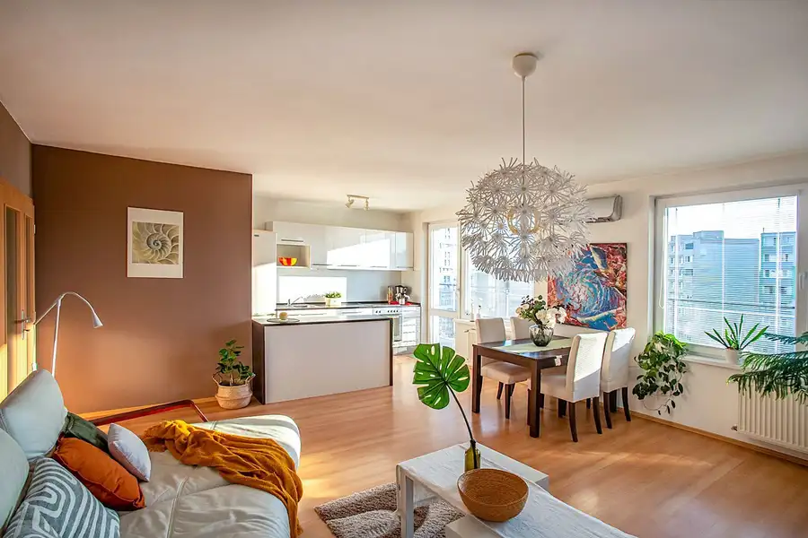
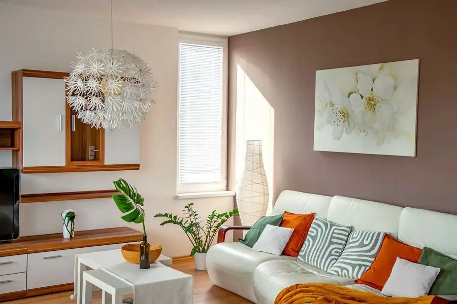
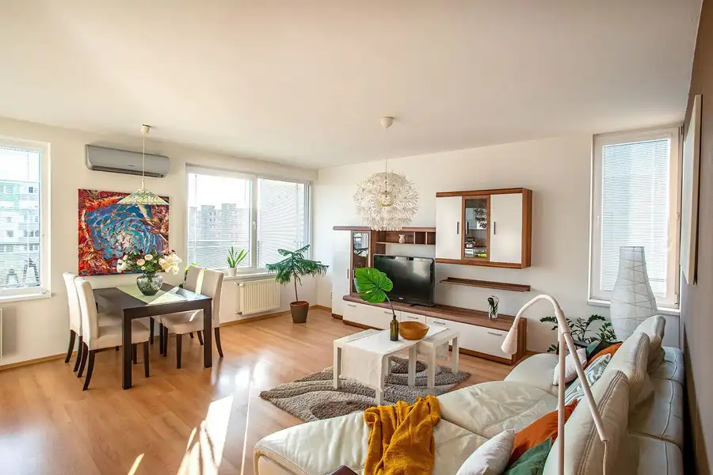
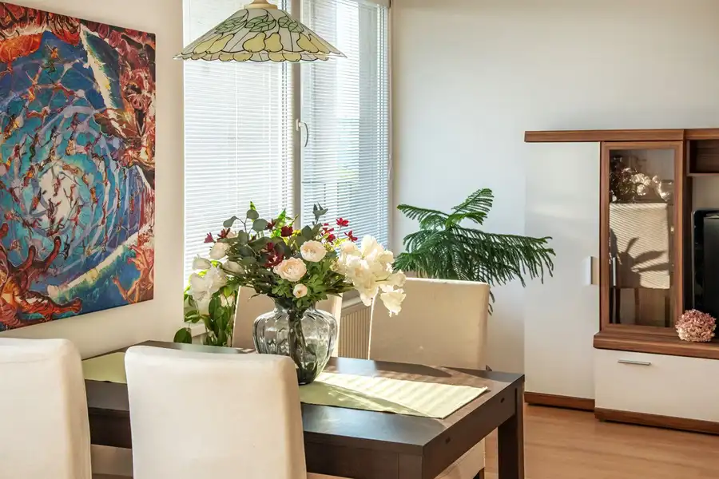
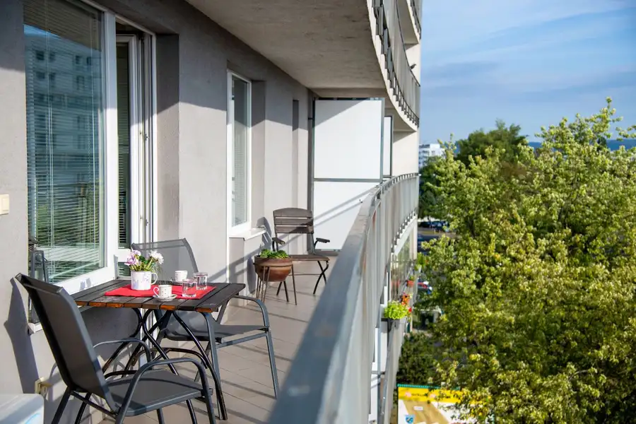
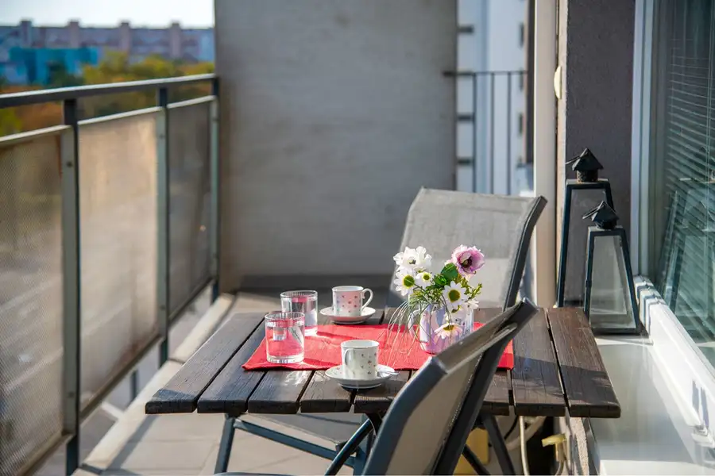
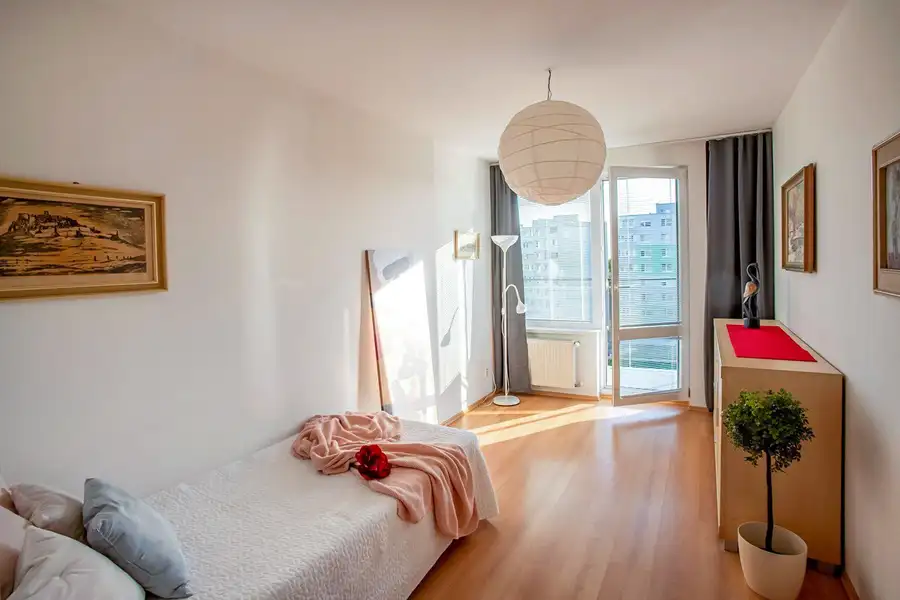

2-izbový byt v novostavbe Dolce Vita na Vrakunskej ulici – Podunajské Biskupice
Podunajské Biskupice, Bratislava







- Dispozícia2-izbový
- Plocha80 m²
- Poschodie5. z 8
- StavNovostavba
- Energetická triedaB
O nehnuteľnosti
Ponúkame na predaj 2-izbový byt v bytovom dome Dolce Vita na Vrakunskej ulici.BYT:-2-izbový byt -kuchyňa prepojená s obývačkou- oddelené WC- okno v kúpeľni-úžitková plocha bytu 65 m2-veľkorysá loggia 13 m2-pivnica 2 m2- možnosť dostavby samostatnej miestnosti-5. posch. zo 8 – ich s výťahom-orientácia na východ-klimatizácia v obývacej miestnosti-byt je kompletne zariadený-otváranie vstupnej brány priamo z bytu-parkovanie v podzemnej garážiBYTOVÝ DOM-postavený v roku 2010-prístup do bytového domu priamo z garáží-prístup na súkromné parkovacie státia-vstup do budovy aj garáží prostredníctvom jedného chipu -kvalitná tepelná izolácia fasády-vlastná kotolňa-optický internetOKOLIE-kompletná infraštruktúra-potraviny, obchody-reštaurácie-materské a základné školy-zdravotné stredisko s lekárňou-detské ihriská-možnosti športovania a prechádzok v okolí Malého Dunaja-dobré dopravné spojenie s centrom BratislavyCENA:-byt s pivnicou 245 000,- € -garážové státie 18 000,- €Kompletný právny servis je zahrnutý v cene.KONTAKT:-Lenka Zmijová, 0903 417 106, lenka@kabereal.sk
Parametre
- Bezpečnosť
- Elektronický zámkový systém, Bezpečnostné dvere, Kamerový systém
- Cena vrátane energií
- Nie
- Doprava
- Diaľnica, Letisko, MHD
- Druh
- 2 izbový byt
- Dátum zverejnenia
- 26. 08. 2026
- Energetický certifikát budovy
- B
- Orientácia
- Východná
- Podlažie
- 5
- Počet izieb / miestností
- 2
- Počet lodžií
- 1
- Počet nadzemných podlaží
- 8
- Počet parkovacích miest v garáži
- 1
- Počet pivníc
- 1
- Počet spální
- 1
- Počet vonkajších parkovacích miest
- 1
- Rok výstavby
- 2010
- Stav nehnuteľnosti
- Novostavba
- Telekomunikácie
- Optická sieť
- Typ
- Predaj
- Typ konštrukcie
- Zmiešaná
- Vybavenie
- Lodžia, Garáž, Pivnica, Garážové státie, Výťah, Vonkajšie parkovacie miesto, Vyhradené parkovanie
- Vykurovanie
- Klimatizacia, Ústredné
- Zdroj tepla
- Teplo z kotolne
- Úžitková plocha
- 80 m²